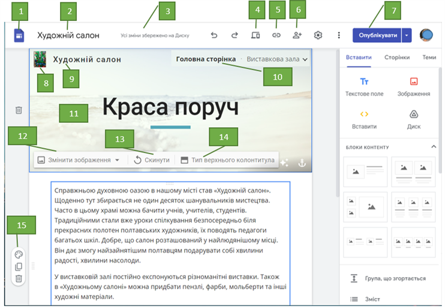

Теоретична частина
Веб Редактори — програми, які призначено для створення вебсторінок сайтів, наприклад Adobe Dreamweaver, Microsoft FrontPage, WYSIWYG Web Builder та ін. Ці програми мають засоби для візуального конструювання вебсторінок. Розробник розміщує на вебсторінках об’єкти — зображення, таб лиці, списки та інше, вибираючи їх заготовки з бібліотеки об’єктів. HTML-код кожної вебсторінки генерується на основі отриманого набору об’єктів. Такі програми називають WYSIWYG-редакторами (англ. What You See Is What You Get — що ви бачите, то ви й отримуєте).
Системи управління вебконтентом WCMS (англ. Web Content Management System — система управління вебконтентом) — програми, які призначено для створення, редагування та керування вмістом веб-сайту. Популярними WCMS є системи Joomla, Wordpress, MediaWiki та ін. Вони містять набори вже готових шаблонів оформлення вебсторінок і модулів, що роблять сайт динамічним: форумів, стрічок новин, каталогів файлів тощо. Контент сторінок, створених у цих системах, зберігається в базі даних, а HTML-код генерується автоматично на основі шаблону.
Назване програмне забезпечення можна встановити на локальному комп’ютері. Створені в їх середовищі веб сайти потрібно самостійно розміщувати в Інтернеті.
Онлайн-системи конструювання сайтів призначено для розробки сайтів безпосередньо на віддаленому сервері в Інтернеті. Такими є сервіси Google Сайти, Weebly та ін. Створені в цих сервісах сайти автоматично розміщуються на серверах відповідних сервісів, і розробник не може безпосередньо редагувати HTML-код вебсторінок.
Створення вебсайту засобами онлайн-системи конструювання сайтів відбувається в кілька кроків:
- Реєстрація облікового запису на сервері онлайн-системи конструювання сайтів.
- Вибір назви сайту та шаблону його оформлення.
- Створення сторінок сайту та системи навігації.
- Заповнення сторінок контентом.
- Публікація сайту.
Розглянемо, як відбувається процес розробки веб сайту засобами, що безкоштовно надає користувачам сервіс Google Сайти.
Створити сайт можна різними способами:
- Відкрити вікно Google Диска, скориставшись вашим обліковим записом Google, та виконати Створити —> Більше —> Google Сайти.
- Виконати вхід у сервіс Google, скориставшись вашим обліковим записом, перейти за адресою sites.google.com і вибрати кнопку Створити новий сайт у нижньому правому куті вікна Сайти.
Після виконання цих дій у вікні браузера буде відкрито головну сторінку вашого сайту в режимі редагування. На рис.1 відображено вигляд головної сторінки сайту «Художній салон» в режимі редагування.
Одночасно у вікні Google Диска та у вікні Сайти з’явиться ескіз сайту з підписом Сайт без назви та значком . Подвійне клацання на цьому ескізі буде відкривати сайт у режимі редагування для подальшої роботи із сайтом.

- Домашня сторінка
- Назва документа на Google Диску.
- Історія версій
- Попередній вигляд
- Копіювати посилання на опублікований сайт.
- Надати доступ іншим
- Опублікувати сайт
- Логотип сайту
- Назва сайту
- Панель навігації.
- Заголовок вебсторінки
- Кнопка Змінити зображення на панелі, що спливає.
- Кнопка Скинути зображення на панелі, що спливає.
- Кнопка Тип верхнього колонтитула на панелі, що спливає.
- Спливаюча панель для форматування розділу.
Вибір назви сайту та шаблону оформлення
Кожен сайт має назву, яка відображає його зміст або призначення. Щоб дати назву новому сайту, її потрібно ввести в поле Введіть назву сайту у верхній частині заголовка сторінки. Одночасно буде змінено підпис ескізу сайту на Google Диску.
Усі зміни, виконані під час редагування сайту, будуть зберігатися автоматично.
Для вибору шаблону оформлення сайту слід:
- Вибрати заголовок вкладки Теми в правій частині вікна.
- Вибрати одну із запропонованих тем оформлення.
- Вибрати кольорову гаму та стиль шрифту із числа тих, які запропоновано для вибраної теми.
Щоб змінити вигляд заголовка на сторінках сайту, слід навести вказівник на заголовок, після чого з’являється панель налаштувань.
Вибір команди Змінити зображення приводить до відкриття списку зображень, які можуть бути використані в заголовку сторінки. За вибору команди Тип верхнього колонтитула стає можливим змінення типу заголовка — Обкладинка, Великий банер, Банер або Лише заголовок.
Щоб розмістити на сторінках сайту нижній колонтитул —підвал, потрібно підвести вказівник до нижньої межі сторінки та вибрати кнопку Додати нижній колонтитул. У поле, що з’явиться, можна ввести дані розробника сайту, рік його створення або оновлення тощо.
Верхній і нижній колонтитули будуть автоматично повторюватися на всіх сторінках сайту, лише заголовок у верхньому колонтитулі буде таким, як ім’я сторінки.
У правій частині вікна поруч з головною сторінкою сайту розміщено бічну панель з вкладками Вставити, Сторінки, Теми. Інструменти цієї панелі використовуються для додавання, видалення та редагування сторінок, уставлення об’єктів на сторінки, вибору та змінення оформлення тощо.
Контрольні питання
- Як називається текст, що містить гіперпосилання? Позначте одну правильну відповідь.
- А Сайт
- Б Хостинг
- В Гіпертекст
- Г Контент
- Як називається об’єднання тематично пов’язаних веб-сторінок і документів під одним доменним іменем? Позначте одну правильну відповідь.
- А Сайт
- Б Хостинг
- В Гіпертекст
- Г Контент
- Як називається послуга сервера з надання свого дискового простору для розміщення сайтів? Позначте одну правильну відповідь.
- А Хостинг
- Б Гіпертекст
- В Сайт
- Г Контент
- Які етапи створення сайта зазвичай передують його наповненню контентом? Позначте всі правильні відповіді.
- А Планування структури сайта
- Б Розробка дизайну
- В Обслуговування сайта
- Г Просування сайта
- На які етапи можна умовно розподілити автоматизовану розробку сайта з використанням онлайн-систем? Позначте всі правильні відповіді.
- А Написання html-коду
- Б Створення дизайну
- В Вибір комп’ютера для локального розміщення сайта
- Г Наповнення контентом
- Установіть відповідність між назвами (1–4) та описом етапів (А–Г) створення сайта.
-
1 Маркетингові дослідження
-
2 Конструювання сайта
-
3 Обслуговування сайта
-
4 Просування сайта
-
А Оновлення (поповнення інформацією), супровід (адміністрування, прийом замовлень у інтернет-магазині тощо), технічне обслуговування (зокрема, вдосконалення дизайну і структури сайта) тощо
-
Б Переведення спланованого сайта у функціонуючий кінцевий продукт, який працюватиме у всіх інтернет-браузерах
-
В Здійснення заходів (рекламування, оптимізація структури та змісту, організація опитувань тощо) із метою збільшення відвідуваності сайта
-
Г Визначення призначення сайта й мети його створення, вивчення запитів майбутніх відвідувачів сайта, ознайомлення з подібними сайтами, планування оригінальних рис тощо
-
- Відновіть послідовність етапів розробки сайта
- А Розробка дизайну, конструювання сайта та вибір системи керування
- Б Маркетингові дослідження та планування структури сайта
- В Наповнення сайта контентом, тестування та розміщення в Інтернеті
- Г Обслуговування та просування сайта
- Запишіть великими англійськими літерами абревіатуру, що означає систему керування сайтом.